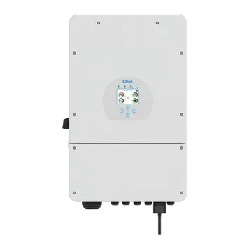
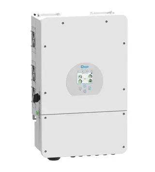
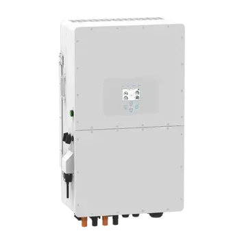

1Ф
Гібридний інвертор Deye SUN-5K-SG03LP1-EU 5kW, 1Ф, 48V
Однофазний гібридний інвертор Deye для резерву та сонячної генерації в будинку.
40 230 грн
Інвертори Deye та інші гібридні рішення для сонячної генерації, акумуляторного резерву й власного споживання.

Використовуйте фільтри, щоб швидко підібрати інвертор за фазністю та брендом.
Однофазний гібридний інвертор Deye для резерву та сонячної генерації в будинку.

Популярний однофазний гібридний інвертор Deye 6 кВт для будинку з акумуляторним резервом.

Однофазний інвертор Deye 8 кВт для більших домашніх навантажень.

Потужний однофазний гібридний інвертор Deye для будинку з високим навантаженням.

Однофазний Deye 12 кВт для потужних домашніх систем з акумуляторами.

Трифазний гібридний інвертор Deye для будинку або бізнесу з трифазною мережею.

Трифазний гібридний інвертор Deye 12 кВт для розподілу навантажень по фазах.

Трифазний високовольтний Deye 15 кВт для більших гібридних систем.

Потужний трифазний Deye для бізнесу або великого приватного об'єкта.

Трифазний гібридний інвертор для об'єктів із великим навантаженням.

Промисловіший трифазний Deye 30 кВт з трьома MPPT для великих гібридних систем.

Потужний трифазний гібридний інвертор Deye 50 кВт для великих бізнес-об'єктів.
За цими фільтрами товарів поки немає. Спробуйте іншу фазу або бренд.

Трифазний високовольтний гібридний інвертор Deye 80 кВт із шістьма MPPT для промислових систем.